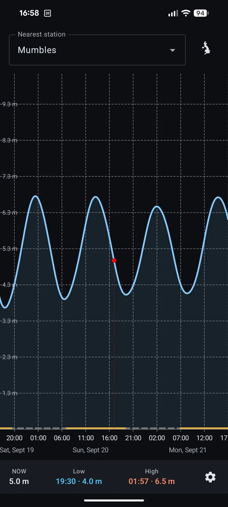
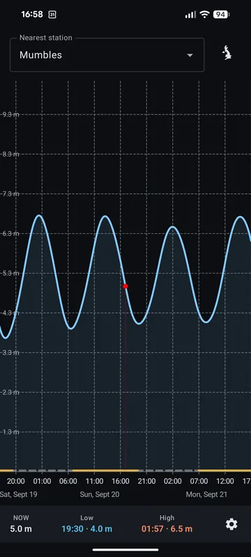
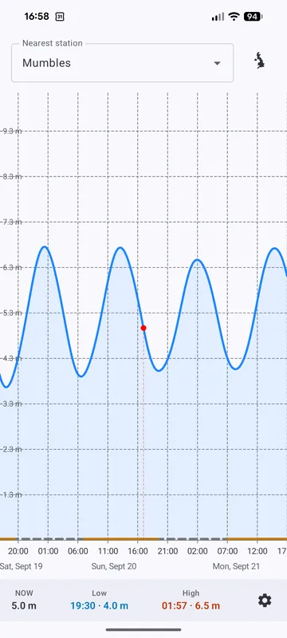
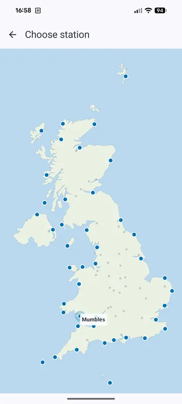
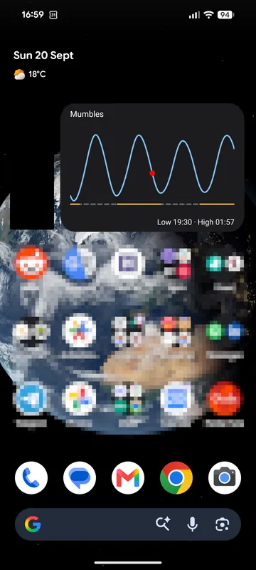

Internal testing · up to 100 users
Tide predictions that work with no signal at all
Multi-day charts, your nearest UK station, and a home-screen widget — everything computed on your phone. No account, no network, nothing sent anywhere.

- No account
- No network
- 45 UK stations
- Free during testing
Built for the water’s edge
Everything a tide app should do — and nothing that needs a network.
Multi-day tide chart
A pannable chart with high and low times for several days ahead. Drag to plan your day.
Nearest station by GPS
The nearest of 45 UK stations, found automatically — or browse them all on a map.
Home-screen widget
Tide curve and next high/low with a “now” marker — glanceable without opening the app.
Entirely offline
Predictions are computed on your device. No network required — harbour walls and dead zones included.
A look inside




Join the internal beta
UK Tides Offline is in internal testing on Google Play. Spots are limited to 100 users — apply below and we’ll send you a tester link.
Apply for the betaFree during the testing period